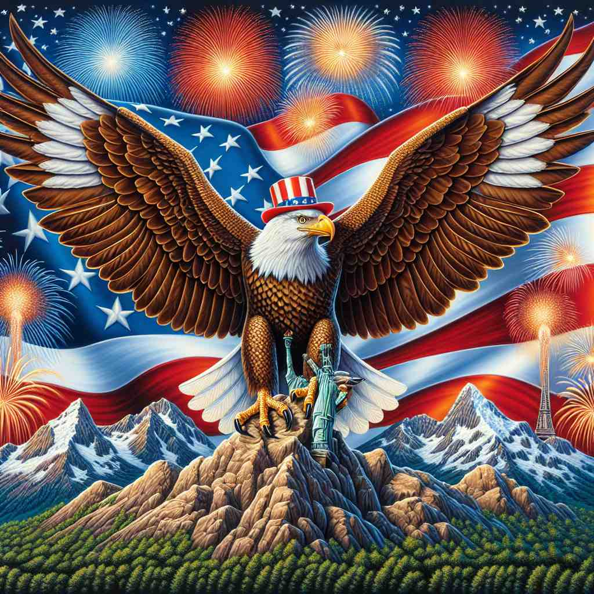

💬 The American symbols like the flag and the eagle are important to the people. 美国的象征如国旗和鹰对于人民来说是重要的。

💬 He proudly holds the American flag in his hand. 他自豪地手持美国国旗。

💬 The American flag waved proudly in the sky during the celebration. 美国国旗在庆典中骄傲地飘扬在天空中。
💬 The festival showcased the vibrant American culture with food, music, and sports. 节日通过食物、音乐和体育展示了丰富多彩的美国文化。
🧠 "American" 的核心含义与美国及其居民有关。通过联想美国的特征，可以轻松记住它作为形容词的用法。然后，想象这些特征具体化为人、语言，甚至扩展到整个美洲大陆，就能理解它的其他含义。记住美国国旗的星条图案，可以帮助你联想这个词的多重含义：星星代表国家（核心含义），条纹则可以联想到延伸到更广泛的美洲概念。
🔈 [əˈmerɪkən]
🗝️ adj. relating to or characteristic of the United States or its inhabitants 与美国或其居民有关或具有典型特征的
🎭 在一个国际会议上，各国代表正在展示他们国家的文化特点。当美国代表上台时，他播放了一段影片，里面有五光十色的纽约夜景、美国国旗在风中飘扬，还有热情的中西部家庭聚会，这些画面生动地体现了'American'的特点。
💬 American culture has influenced many parts of the world. 美国文化影响了世界许多地方。
🌳 由词根 "Americ-"（源自地名 America）和形容词后缀 "-an" 组成，表示与美国相关的或美国的。
🕸️ 1. Mexican: 墨西哥的 2. Canadian: 加拿大的 3. Australian: 澳大利亚的
💡 记住 "American" 时，可以联想 Geographic 地理相关的名词与 "-an" 后缀，通常表示某个国家或地区的属性或人。通过这种模式可以轻松记住类似的国家相关形容词。